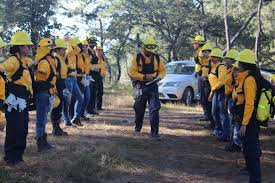
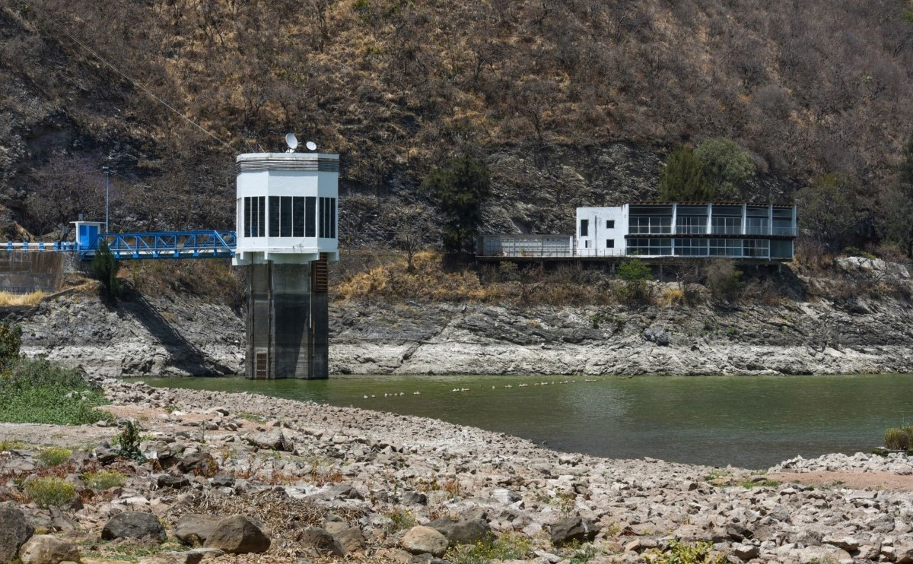
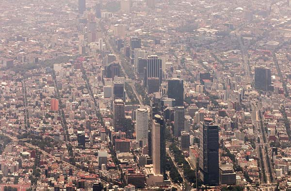

Incendios foreztales

Las Brigadas de Refuerzo en Incendios Forestales (BRIF) son unidades helitransportadas de personal altamente especializado en la extinción de incendios.
Proporcionan un servicio de apoyo a las comunidades autónomas, pudiendo actuar en cualquier punto del territorio nacional.
Más del 90% de los incendios forestales son provocados por el ser humano, y sus principales causas son las quemas agrícolas, la presencia de colillas de cigarro y el
descuido en el uso de fogatas.
Éstos tienen un alto impacto en los bosques y su biodiversidad, afectando flora, fauna y personas.
Tan solo en 2017 en México se registraron 8,896 incendios forestales en los 32 estados de la república, afectando una superficie de 726,361 ha.
Los cinco estados con mayor número de incendios durante 2017 fueron Estado de México, Chihuahua, Michoacán, Jalisco y Ciudad de México.
En México, la Comisión Nacional Forestal señaló que 2023 fue el año más crítico en incendios forestales en los últimos 25 años. De acuerdo a datos de la Comisión,
entre enero y noviembre de 2023, se registró un total de 7493 incendios forestales en las 32 entidades federativas del país.
Durante 2022, México se colocó en la lista de países latinoamericanos con mayor pérdida de cobertura arbórea en la última década. Los datos señalaron que, en 2022,
la superficie forestal perdida rondó las 170.000 hectáreas.
Los datos alarmantes revelaron que más de un tercio de los incendios forestales registrados en 2023, fueron provocados intencionalmente.
El segundo factor más común es el sector agrícola, responsable del 19%. Y, solo el 2,66% de los incendios forestales en México fueron posiblemente iniciados por causas naturales.
La institución detalló que Jalisco es el Estado más afectado, liderando la lista con la mayor cantidad de reportes de incendios y superficie afectada.
Este hecho pone de manifiesto la necesidad de implementar medidas específicas para la prevención y control de incendios en esta región.
La brigadas rurales o comunitarias realizan actividades de prevención y combate de incendios. En Reforestamos, apoyamos y coordinamos brigadas forestales comunitarias en diversos estados como Jalisco, Michoacán, Guanajuato, Querétaro, Estado de México, Puebla y Nuevo León.
Desabasto de agua
Dato informativo
El río Cutzamala es un río del interior de México, uno de los afluentes del río Balsas, es el que más volumen de agua aporta en la segunda subregión hidrológica
llamada del Medio Balsas. Ambos ríos se unen después de cruzar cada uno, a las poblaciones de Ciudad Altamirano y Coyuca de Catalán, respectivamente.
Cutzamala da su nombre al sistema de agua potable, con aporte de un 30 % aproximadamente del total, que abastece a la ciudad de México.
Inicialmente las presas que se emplearon para la integración de dicho sistema eran utilizadas básicamente en la producción de energía eléctrica
(Sistema Hidroeléctrico "Miguel Alemán") y se localizaban en la cuenca del ya citado, la razón para traer agua de esta parte del río, fue el hundimiento de la Ciudad de
México por extraer agua del subsuelo además del rápido aumento de población que tuvo lugar en los años 1930 y posteriores que finalmente generaron el agotamiento de los recursos
hídricos de la cuenca del río Lerma que, originalmente, fue el primer intento por resolver la insuficiencia hídrica de la ciudad.
En la actualidad el Sistema de Cutzamala es tema de conversación debido a las crisis de agua que se vive en la Ciudad de México (CDMX) y el Estado de México (Edomex).
Primero hay que aclarar que se trata de una de las fuentes de abastecimiento de agua potable más grandes del país. No cuenta con, sino con siete presas para brindar un
óptimo almacenamiento y posterior potabilización de líquido en el Valle de México.
El Sistema Cutzamala se ubica en el Estado de México, el cual es muy extenso, pero se concentra principalmente en San José Villa de Allende, localidad del Edomex.
Aprovecha las aguas de la cuenca alta del río Cutzamala, mismas que provienen de las presas de Tuxpan y El Bosque, en el estado de Michoacán, además de Colorines,
Ixtapan del Oro, Villa Victoria, Valle de Bravo y Chilesdo en el Edomex.
Nivel de agua del Sistema Cutzamala en 2024
Hasta el pasado 13 de febrero 2024, el nivel de llenado del sistema hídrico bajó del 39.3% de su capacidad ordinaria reportado la semana pasada al 38.7%, derivado de
la sequía que prevalece en la cuenca.
Citlalli Elizabeth Peraza, directora general del Organismo de Cuenca Aguas del Valle de México (OCAVM), reveló que el Sistema Cutzamala está
compuesto por tres presas de almacenamiento (El Bosque, Valle de Bravo y Villa Victoria) que suministran 25% de abasto de la Zona Metropolitana del Valle de México.
metoroilogico
Durante la reunión del Comité Técnico de Operación de Obras Hidráulicas, las autoridades informaron que en lo referente a almacenamiento del agua, el Sistema Cutzamala se encuentra en un 35.5% de su capacidad total, al 25 de marzo, con un total de 277.61 milímetros cúbicos de agua, lo cual es una diferencia 33.8 puntos porcentuales, frente al 69.3% (542.46 mm3) del almacenamiento histórico.
El Servicio Meteorológico Nacional (SMN) reveló que México experimentó una marcada disminución de lluvias durante el periodo del 24 de febrero al 24 de marzo de 2024, con un 53.9 % menos de precipitaciones, en comparación con el promedio histórico. Según lo informado por el SMN, en el periodo señalado, se acumularon 7.1 milímetros de agua; mientras que los datos históricos, entre 1991 y 2020 el mismo lapso de tiempo, son de 15.4 milímetros.
Sobrepoblacion CDMX

La relación entre la tasa de consumo de suelo y la tasa de crecimiento de la población urbana ha mostrado que la Ciudad de México tiene un crecimiento expansivo y
que ha sido deficiente, este tipo de crecimiento implica un consumo ineficiente del suelo, genera estructuras urbanas discontinuas y con alto grado de fragmentación,
lo que la hace ineficaz, inequitativa y financieramente insostenible.
Se planteara algunas propuestas para ayudar a desacelerar los efectos del crecimiento poblacional, y que contribuyen al cuidado del medio ambiente,
así como a la redistribución de actividades y a la forma de vida de los habitantes de la Ciudad de México.
La Ciudad de México tiene una extensión de 1,494.3 𝑘𝑚2 representa el 0.1% de la superficie del territorio nacional, cuenta actualmente con 9,209,944 habitantes, lo cual es el 7.3% del total del país, en la ciudad viven 6,163 personas por kilómetro cuadrado, siendo ésta la entidad federativa con mayor densidad de población, lo que ha generado efectos positivos como asentamiento de la mayor parte de fuentes de trabajo para la ciudad, pero también múltiples consecuencias negativas como el agotamiento de recursos naturales (generados por el uso de suelo), degradación del medioambiente (cambios en el ciclo del agua), aumento del desempleo (sobre todo a raíz de la pandemia por la Covid-19), aumento del coste de vida (renta de inmueble, alimentos, transporte) que van desde la movilidad, el uso de suelo, el agua.
Tabla demografica
En la siguiente tabla verificaremos el problema de la Sobrepoblacion en la Ciudad de México, siendo de las ciudades con menor extensión territorial concentra un número enorme de habitantes por kilómetro cuadrado, lo que demanda mayores servicios para los ciudadanos.
| Entidad federativa | 2020 |
|---|---|
| Ciudad de México | 6 163.3 |
| Morelos | 404.1 |
| Tlaxcala | 336 |
| Aguascalientes | 253.9 |
| Querétaro | 202.6 |
| Guanajuato | 201.5 |
| Puebla | 191.9 |
| Hidalgo | 148.1 |
| Veracruz de Ignacio de | 112.3 |